The Twenties and Raging 20s
The fashions of the 2020s represent a departure from 2010s fashion and feature a nostalgia for older aesthetics.
They have been largely inspired by styles of the late 1990s to mid-2000s, and even the 1980s.
Early in the decade, several publications noted the shortened trend and nostalgia cycle in 2020s fashion.
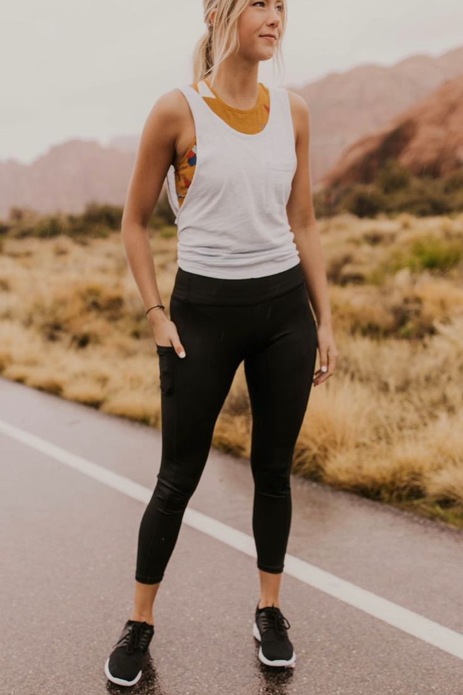
Athleisure & activewear
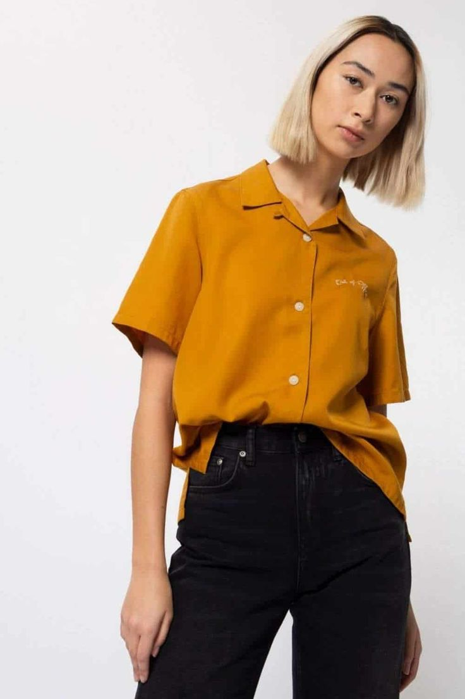
Gender neutral clothing
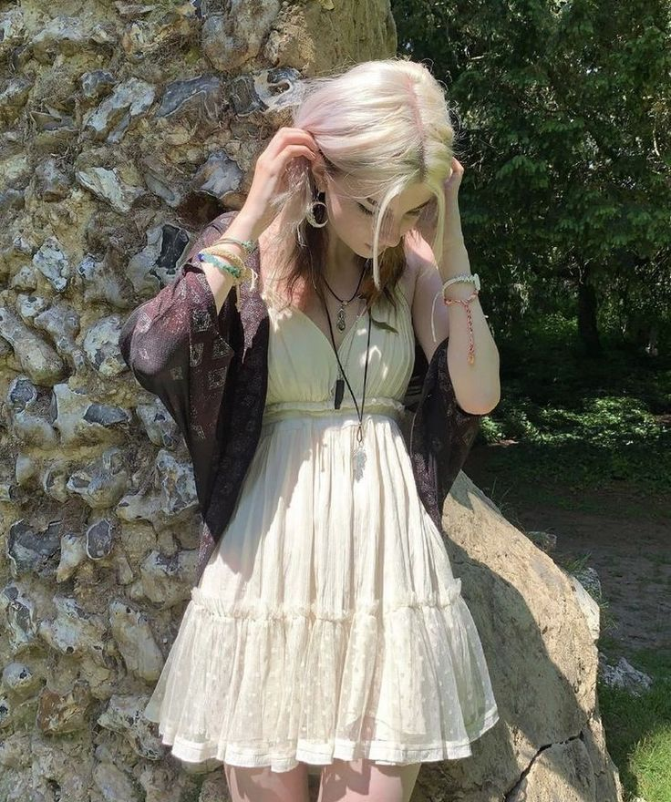
Goblincore & fairy grunge
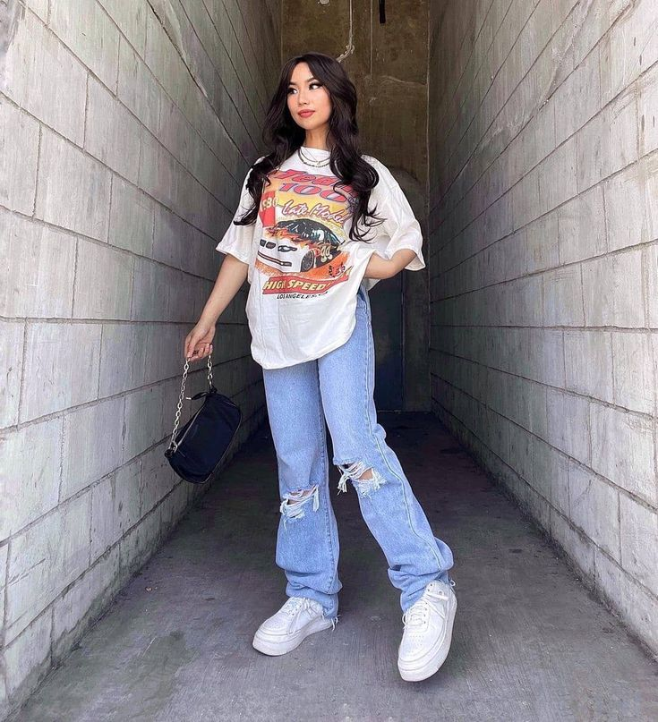
Throughout the 2020s, streetwear fashion was a continued presence in mainstream culture,
incorporating elements from skate fashion, athleisure,
and vintage clothing. It drew
inspiration from 2000s fashion, blending casual, functional pieces with luxury and expressive details.
The style often featured comfortable items like hoodies, sweatpants, and graphic tees, with high-end
collaborations and distinct textures and silhouettes.
This is also the decade where thrifting
exploded in popularity due to it being centered around finding valuable pieces of clothing at a reasonable price.
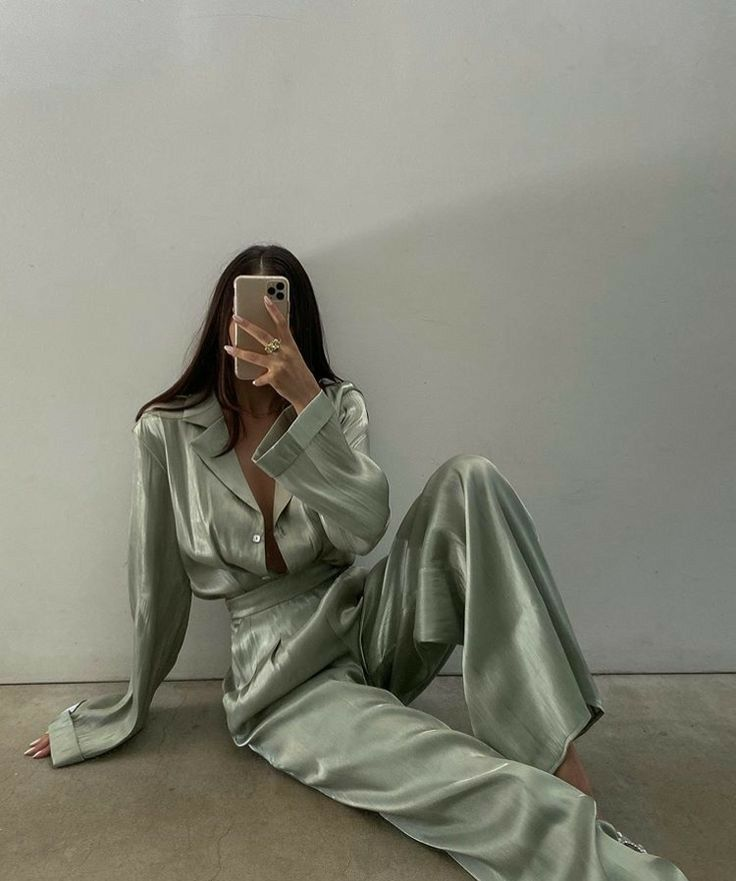
Fashion was also shaped by the COVID-19 pandemic, which had a major impact on the fashion industry,
and led to shifting retail and consumer trends. One positive thing COVID-19 gave the fashion industry was a
new clothing item to style which allowed many people to express a new level of creativity.
During the pandemic, fashion trends evolved significantly, with a notable shift towards
comfort. This change was particularly evident in American public schools and universities,
where students embraced more relaxed and casual clothing options. As remote learning became normalized,
students in both K-12 schools and higher education increasingly favored comfortable clothing
like pajamas, sweatpants, and athleisure wear.
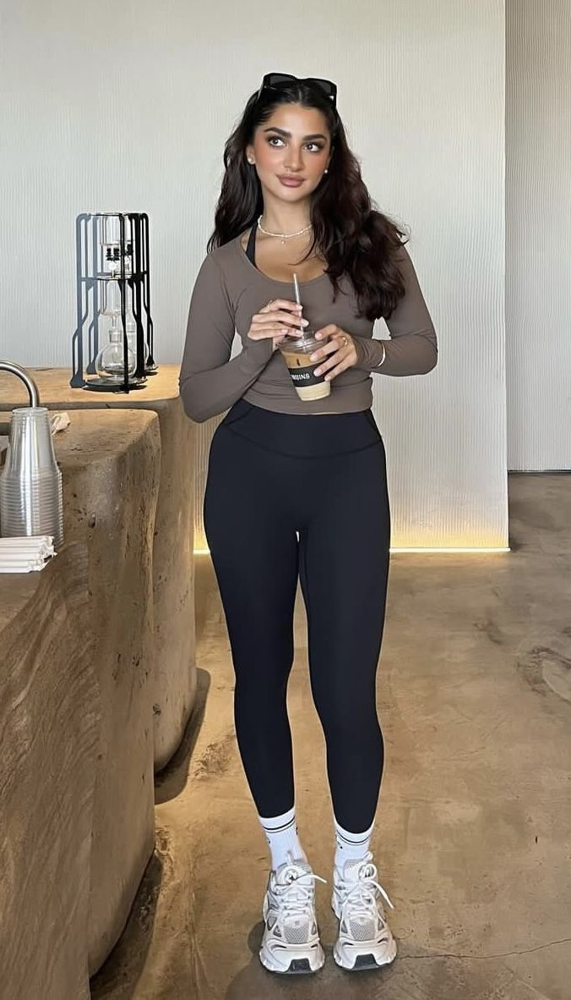
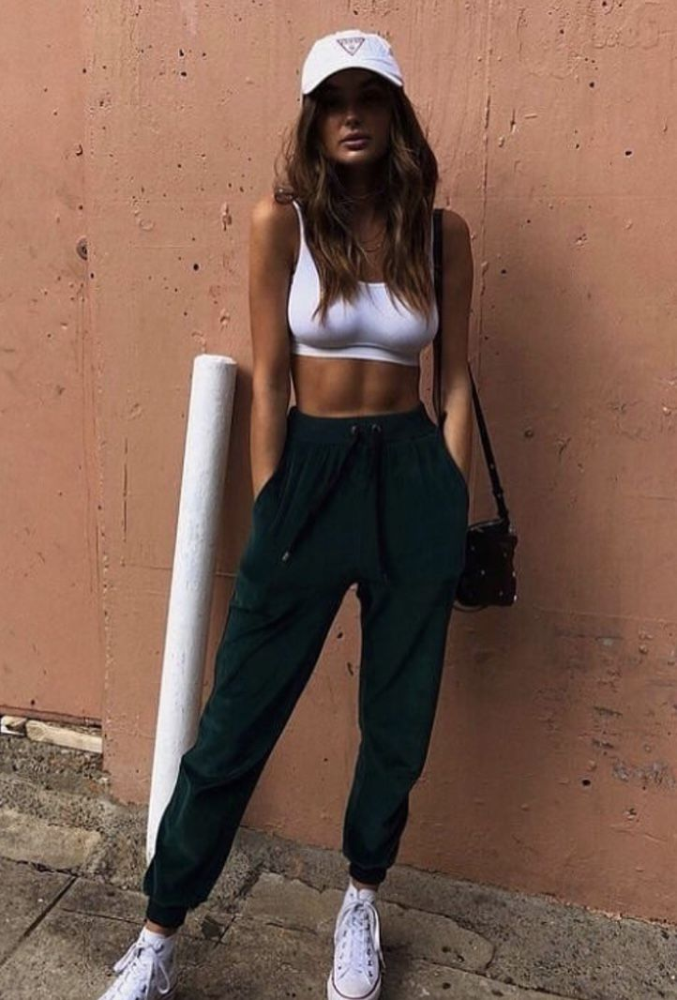
The rise of athleisure and activewear in the 2010s carried over in the 2020s. Atheltic wear such as
yoga pants, hoodies, athletic shorts, crocs, sneakers, and sweatpants remained stamples
in millennial, Gen Z, and Gen Alpha wardrobes, although these were generally looser and less form-fitting
than the casual wear of the previous decade. Despite the return to minimalism in certain fashion circles,
the vast majority of Americans continued to choose comfortable clothing.
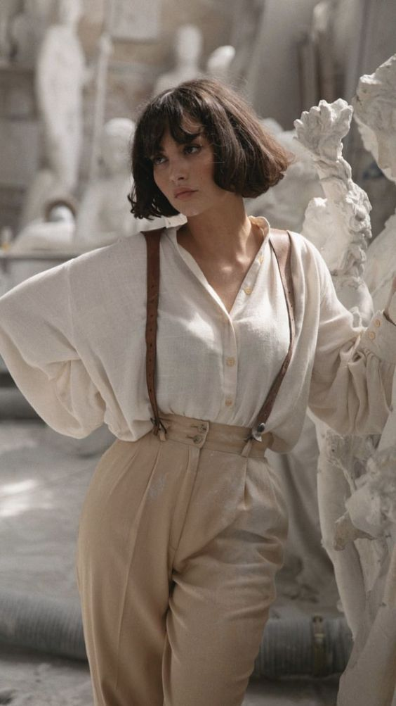
Genderless fashion saw continued popularity on the red carpet, online, and in LGBTQ+ spaces. It
became a tool for self-expression and challenged traditional norms. However, gendered clothing
remained the cultural standard throughout the majority of the United States and Europe, with mainstream fashion
still adhering to traditional gender divides. Originally a niche Japanese subculture, it went mainstream in America,
Korea and the UK by 2021, with fashion experts speculating that the emerging androgynous style represents a new ideal
of male beauty. The style took inspiration from 1980s fashion, anime, trendsetters like Ryuchell, and the often
androgynous style of K-pop boy bands. Dyed hair, makeup, short shorts, knee socks, necklaces, tight pants,
brothel creepers, Pink Panther and Betty Boop motifs, feminine blouses in leopard print, and silver or bright colours
like pink and orange were particularly common.
Men on the red carpet were also embracing accessories like feather boas and pearl jewelry. Other popular articles
of clothing included kimono style shirts, frilly lace blouses, tunics, boots with stacked Cuban heels, crop tops,
furry ugg boots, kilts, mint green safari jackets with Nudie Cohn inspired embroidery, shiny jackets with shoulder
pads and puffy sleeves, flared trousers, transparent shirts, shawl lapel sports coats sometimes covered with
sequins or rhinestones, oversized silk shirts in purple, green, gold or silver, and suits in eccentric colours
like gold lame,[150] shiny green sequins, or fuchsia.
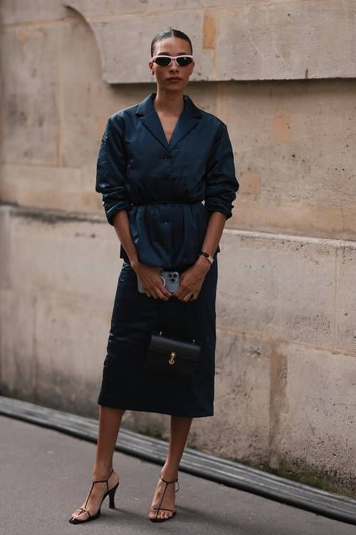
In the early 2020s, clothing with large, bold logos began to lose popularity in America as fashion trends shifted
toward simpler, more refined styles. This change represented a move away from the flashy, logo-centric
designs that had dominated the late 2010s. Many consumers started to focus more on the fabric textures, and
the silhouette of clothing, placing greater emphasis on the quality of materials and the overall construction of
garments rather than their brand names.
As part of this shift, there was an increased interest in understated quiet luxury and "timeless" designs.
People began to prioritize clothing that was simple yet sophisticated, with an appreciation for details like fabric
texture, color, and silhouette. This trend was also correlated with the rise of the "old money" aesthetic,
which is inspired by European fashion houses, and discreet luxury over overt displays of wealth or brand
affiliation. By adopting this style, individuals were able to project the illusion of wealth through subtlety,
choosing garments that conveyed elegance and status without relying on visible logos or flashy designs.
This trend was further influenced by the fashion choices of wealthy celebrities and public figures, who often
embraced minimalist, high-quality garments that exuded quiet affluence. Many consumers, seeking to emulate these
figures, adopted similar styles in an attempt to mirror the sophisticated, understated look associated with the elite.
The influence of these celebrities helped popularize the idea that wealth and status could be communicated through
subtle, refined fashion choices, rather than through overt displays of logos or brand names.
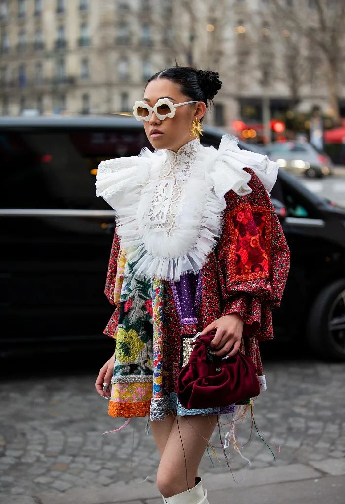
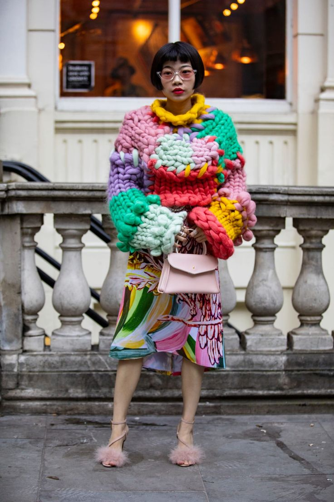
As the decade started, maximalist fashion made a resurgence on the runway, as a backlash against
the fashions of the 2010s. After spending time indoors during the pandemic, many fashion designers
were drawn to bold, colorful, and creative styles. These exuberant outfits became a way to express
individuality and break away from the minimalist fashion of the previous decade. Although maximalism
became popular in high fashion and online communities, it was mostly reserved for special occasions or artistic
expression, while everyday wear continued to favor comfort and simplicity. The TikTok algorithm repurposed
minimalism as a selection of curated aesthetics and "fashion essentials" that appeal to Gen Z and Gen Alpha.
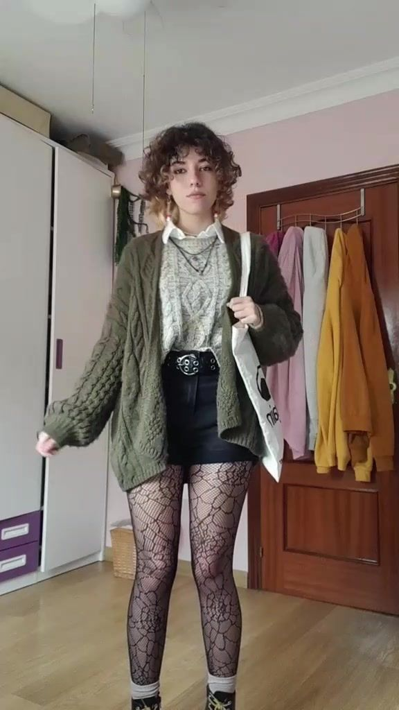
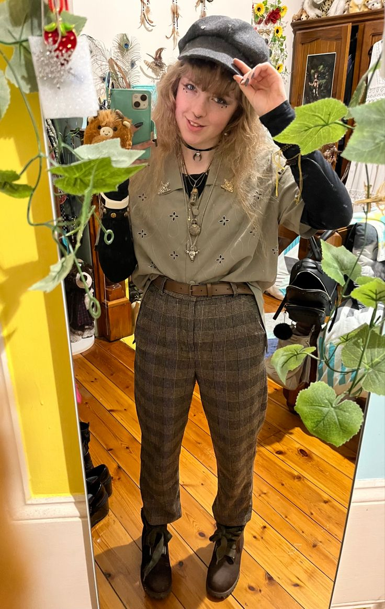
Goblincore and cottagecore are closely related subcultures that combine nature-inspired clothing with a vintage,
worn-in vibe. Key items include oversized sweaters, cardigans, loose blouses, long skirts, floral
dresses, and overalls. These clothes may feature nature-inspired patterns, such as frogs,
mushrooms, strawberries or other earthy motifs. Accessories like woven baskets, straw hats, chunky jewelry
made from wood or stone. This aesthetic has become popular within the LGBTQ+ community for its focus on
self-expression.
Fairy grunge combined the aesthetics of fairycore, coquette, and grunge. Social media creators were mostly
responsible for popularizing this aesthetic. Fairy grunge can be seen as a natural extension of the kinderwhore
style — which has deep roots in grunge — but with a more ethereal note. Fairy grunge often included oversized
t-shirts or hoodies, long or mini skirts, nightgowns, corsets, mittens, gloves, skull patterns, mesh tights or
fishnets, high knee socks, leg warmers, platform Demonia shoes, fairy wings, and elf ears.
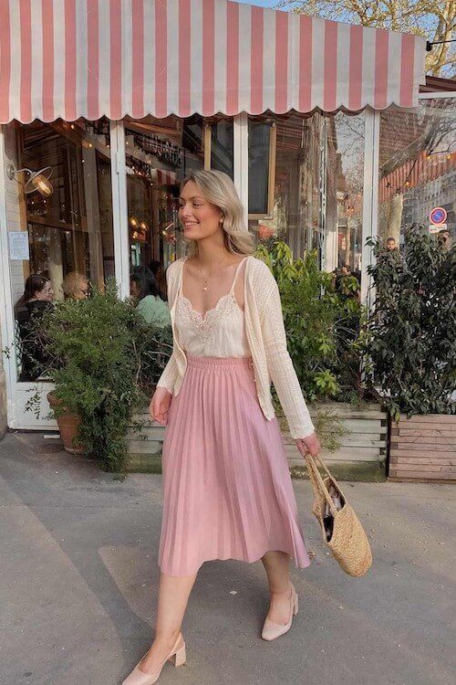
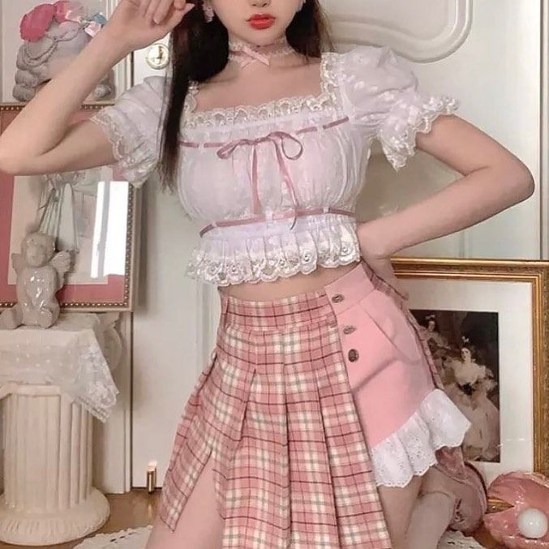
Nymphet, also known as coquette, is an aesthetic that draws on a character cliché first used by
Vladimir Nabokov in his 1955 novel Lolita and its two subsequent film adaptations (1962 and 1997). Heart-shaped
sunglasses, pastel colors, floral/cherry patterns, ballet shoes, hair bows, pigtails and lace dresses are
essential to achieving the coquette look. Musician Lana Del Rey is cited to be a style icon and
helped popularize the nymphet aesthetic for Gen Z women. Coquette has been criticized by some
writers for the glamorization of eating disorders, pedophilia, racism, and classism.